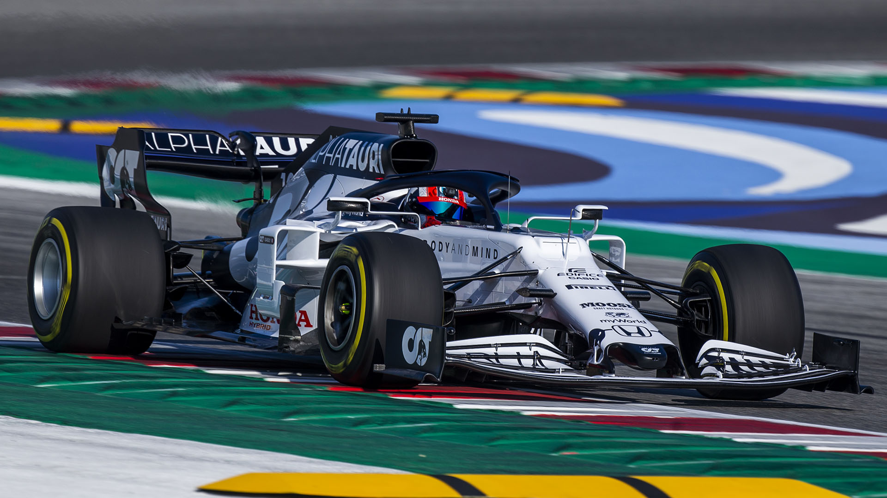
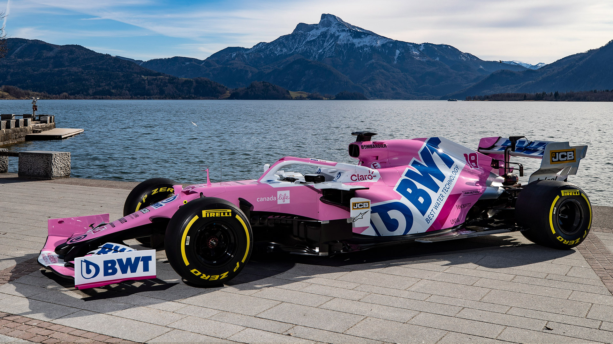
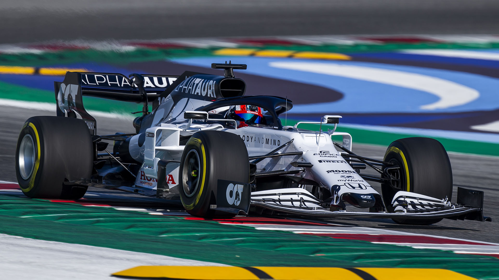
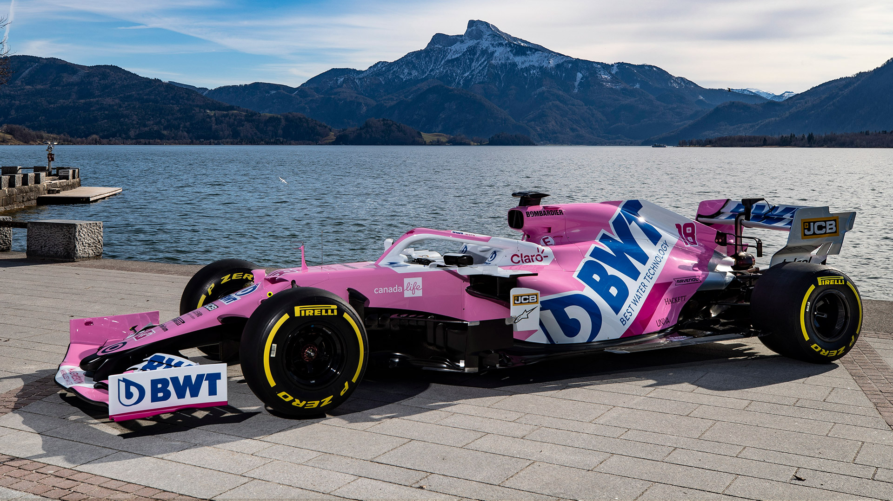
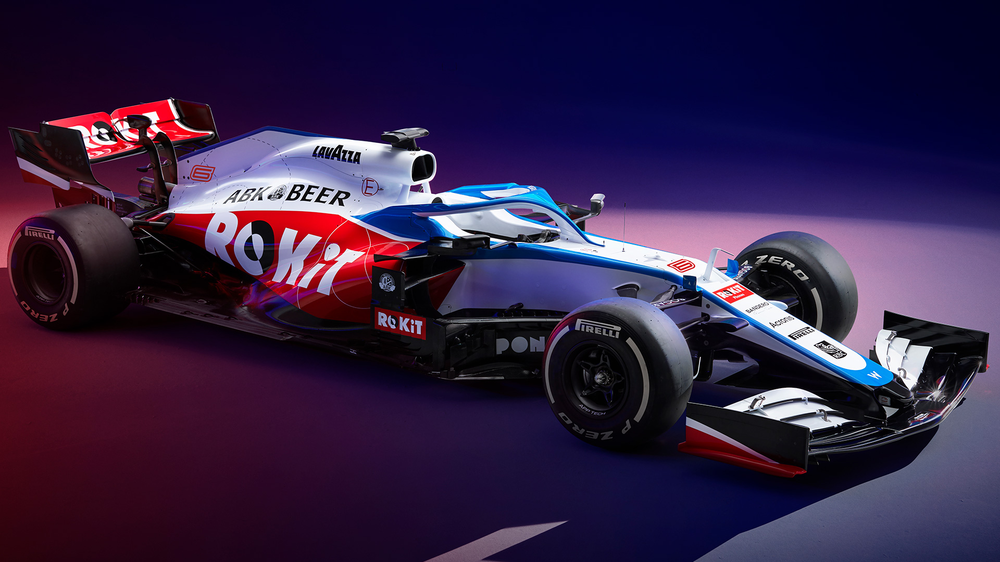
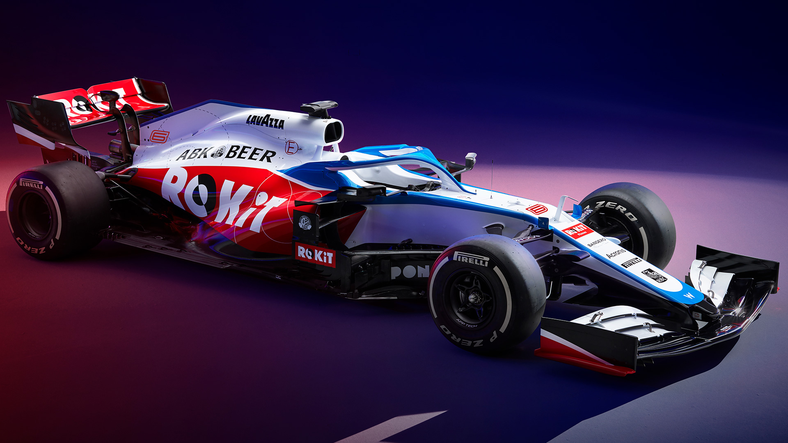

Formula 1
Die Formel 1 ist die höchstrangige von der FIA veranstaltete Rennserie des Formelsports. Sie wird als Königsklasse des Automobilsports bezeichnet, da sie den Anspruch erhebt, die höchsten technischen, fahrerischen, aber auch finanziellen Anforderungen aller Rennserien an Fahrer und Konstrukteure zu stellen. Sie wird auch kurz F1 genannt. Die F1 Weltmeisterschaft heißt offiziell FIA Formula One World Championship.
Das Mercedes AMG Petronas F1 Team ist seit der Saison 2010 das Werksteam des deutschen Automobilherstellers Daimler AG in der Formel 1. Es ging aus dem britischen Rennstall Brawn GP hervor. Das Team hat seinen Sitz im britischen Brackley, tritt aber mit deutscher Lizenz an. Die Motoren werden bei Mercedes AMG HPP in Brixworth gefertigt und auch an Kundenteams geliefert.
Seit Gründung der Formel-1-Weltmeisterschaft im Jahre 1950 gehört Ferrari als fester Bestandteil dazu. Mit über 200 Grand-Prix-Erfolgen sowie 15 Fahrer- und 16 Konstrukteurs-Weltmeisterschaften ist die Scuderia das erfolgreichste Team der Formel-1-Geschichte. Darüber hinaus beteiligte sich Ferrari bis in die 1970er-Jahre mit Erfolg an internationalen GT- und Sportwagenrennen. Das Tochterunternehmen Ferrari Corse unterstützt noch heute Privatteams mit Know-how und Technik im Bereich Touren- und Sportwagen. Das Team beliefert neben seinem eigenen Team auch noch mehrere Kundenteams.
Red Bull Racing ist ein im britischen Milton Keynes ansässiger Formel-1-Rennstall, der sich im Besitz des Energy-Drink-Herstellers Red Bull befindet und mit österreichischer Lizenz antritt. Eigentümer des Teams ist Firmengründer Dietrich Mateschitz. Red Bull Racing ging Ende 2004 aus dem britischen Team Jaguar Racing hervor. 2010, im sechsten Jahr seines Bestehens, erreichte das Team erstmals beide WM-Titel, sowohl die Konstrukteurs-Weltmeisterschaft als auch die Fahrer-Weltmeisterschaft durch Sebastian Vettel. Diesen Erfolg konnte das Team 2011, 2012 und 2013 wiederholen.
McLaren ist nach Ferrari das erfolgreichste Team der Formel-1-Geschichte. Bis heute ist McLaren der einzige Konstrukteur von Renn- und Straßenfahrzeugen, der sowohl beim Großen Preis von Monaco, dem 500-Meilen-Rennen von Indianapolis als auch beim 24-Stunden-Rennen von Le Mans als Sieger geführt wird. Dazu kommen Gesamtsiege in der Formel-1- und ChampCar-Meisterschaft. In diesem Zusammenhang wird in der Fachliteratur auch der fiktive Titel Grand Slam des Motorsports angewandt.
Renault F1 Team, bis 2018 Renault Sport F1 Team, ist ein in Großbritannien ansässiger Motorsportrennstall, der seit 2016 an der Formel-1-Weltmeisterschaft teilnimmt. Das zum französischen Automobilhersteller Renault gehörende Team tritt die Nachfolge des bisherigen Lotus F1 Teams an. Es ist bereits der dritte werksseitige Formel-1-Einsatz des französischen Unternehmens. Renault war bereits von 1977 bis 1985 als Équipe Renault und von 2001 bis 2009 als Renault F1 werksseitig in der Formel 1 engagiert; Fernando Alonso wurde 2005 und 2006 mit dem Werksteam Weltmeister. Darüber hinaus ist das Unternehmen einer der erfolgreichsten Hersteller von Formel-1-Motoren der letzten 30 Jahre. Als Ausrüster von Teams wie Williams, Benetton und Red Bull gewann Renault zwischen 1992 und 2013 insgesamt neun Fahrerweltmeisterschaften mit Nigel Mansell, Alain Prost, Michael Schumacher, Damon Hill, Jacques Villeneuve und Sebastian Vettel.
Die Scuderia AlphaTauri ist ein italienisches Formel-1-Team, das ebenso wie Red Bull Racing dem österreichischen Unternehmens Red Bull GmbH gehört. Der in Faenza beheimatete Rennstall ging aus dem ehemaligen Minardi-Team hervor und trat von 2006 bis 2019 unter dem Namen Scuderia Toro Rosso in der Formel-1-Weltmeisterschaft an.
Das Racing Point F1 Team ist ein mit britischer Lizenz fahrender Formel-1-Rennstall mit Sitz im englischen Silverstone. Das Team entstand im August 2018 und war in der Debütsaison als Racing Point Force India F1 Team gemeldet. Es tritt seit dem Großen Preis von Belgien 2018 in der Formel-1-Weltmeisterschaft an und verwendet Material und Personal des insolventen Rennstalls Force India.
Sauber Motorsport ist ein Schweizer Automobilrennstall mit Sitz in Hinwil im Zürcher Oberland, der von 1982 bis 1991 in der Gruppe C der FIA-Sportwagen-Weltmeisterschaft startete und gegenwärtig in der Formel-1-Weltmeisterschaft engagiert ist. Aufgrund einer Partnerschaft mit dem Fiat-Konzern tritt es aktuell unter dem Sponsoring-Namen Alfa Romeo Racing Orlen und mit Ferrari-Motoren in der Formel 1 an. 2020 fahren der Weltmeister des Jahres 2007 Kimi Räikkönen, der 2001 sein Formel-1-Debüt mit Sauber gab, und der Italiener Antonio Giovinazzi als Stammpiloten für Sauber.
Haas F1 Team, ursprünglich Haas Formula, ist ein US-amerikanisches Motorsportteam, das seit 2016 an der Formel-1-Weltmeisterschaft teilnimmt.
Das Williams F1 Team ist ein britisches Rennsportteam mit Sitz im englischen Grove, das seit 1977 in der Formel 1 aktiv ist. Gründer und Mehrheitseigentümer ist Frank Williams, der bereits von 1968 bis 1975 mit dem Team Frank Williams Racing Cars in der Formel 1 angetreten war. Williams F1 gehört mit 114 Grand-Prix-Siegen, sieben Fahrer- und neun Konstrukteursweltmeistertiteln zu den erfolgreichsten Konstrukteuren in der Geschichte der Formel 1.


 




 
